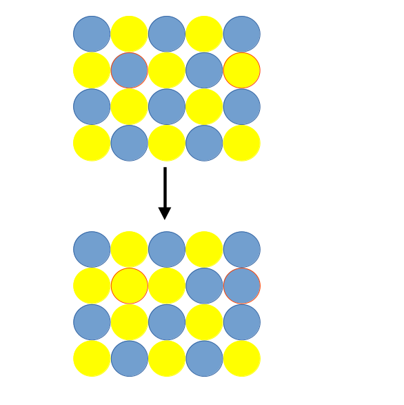

1. Introduction¶
Pymc-nmr has three modes of operation that are based on swap moves. A swap move is where the positions of two atoms, chosen at random, are interchanged. For example, the two atoms outlined in red in the figure below.


The difference in energy of the old (o) and new (n) cells is calculated and employed within the Metropolis-Hastings sampling. Thus the move is accepted with the probability
\(acc(o \rightarrow n) = min(1, exp(- \beta [E_{n} - E_{o}]))\)
1.1 Monte Carlo¶
This is the standard Monte Carlo method described in the books by (Allen and Tildesley 1989; Frenkel and Smit 2002). DL_MONTE. Simulations can be performed in the canonical (\(NVT\)) ensemble and isobaric-isothermal (\(NPT\)) (where MC moves attempting variations in the volume of the system are applied). In addition, the swap moves described above can be employed.
Note as a single particle is moved at a time it tends to be very slow and is only useful where the difference in energy is small. However, using the small MACE model the length of the simulations are more acceptable and the method is capable of getting you out of a jam if the forces in your structure are very high.
1.2 Basin Hopping¶
The basin hopping approach is useful when the difference in energy between swapped particles is large. Each swap of particles is followed by an energy minimisation. The difference in energy is taken after the minimisation and the Metropolis selection rule applied. Although the calculation of the energy consumes more resources the probability of the swap being accepted is significantly greater. In some cases the position of a particle is not known and we have created the possibility of using a NVT molecular dynamics calculation followed by energy minimisation to further reduce the total energy of the cell.
1.2 Randomised Configuration¶
The last method is an ab initio random structure search method. In this approach all the particles of two specific type are swapped and an energy minimisation performed. In out limited experience, this the basin hooping method is more efficient than this technique.
2. Installation¶
External libraries required are NUMPY, MACE and ASE (and their dependecies). In addition libraries to satisfy the ASE calculator or MLIP potentials may be necessary.
3. How to run the program¶
The program requires three input files, control, potentials and basin.xyz that contain the keywords for the functionality of the program, potential model and the atomic positions respectively (in extended xyz).
3.1 control¶
The input is broken into sections depending on the functionality. The main input key words are
Key word |
Type |
Functionality |
|---|---|---|
# |
comments the line (must be first char on the line) |
|
int |
The frequency of printing energies to mc.log defaults to 1 i.e. every iteration |
|
check |
int |
The frequency at which a sanity check is undertaken defaults to 1000 |
restart |
Restart the calculation with old configuration make sure to cp restart.xyz to basin.xyz |
|
temperature |
float |
The temperature (K) of simulation used in Boltzman sampling |
method |
string |
The type of simulation required. Use either basinhop (default), airss or monte. The latter is depricated at the moment as it does not appear to work for swapping Si/Al |
close |
Finish all input |
|
archive |
Turns on the creation of a archive/history file |
|
archivefreq |
int |
The frequency at which the configuration is saved defaults to 1000 |
equilsteps |
int |
The number of equilibration steps |
savedownhill |
During basin hopping method any configuration that has an energy lower than the previous configuration will be saved (NB there may have been an up hill move between downhill events). |
|
move |
string |
The move keyword is used to provide an action on the configuration by the means of a second key word. Each keyword is described below |
Description of keywords to control the molecular dynamics functionality.
Key word |
Type |
Functionality |
|---|---|---|
mdtimestep |
float |
The time step in femtoseconds (default 2.0) |
mdtemperature |
float |
The temperature for the MD in K (default 1000 K) |
mdfirction |
float |
NVT friction (default 0.01 / fs) |
mdsteps |
int |
The number of MD steps (default 1000) |
Description of keywords to control the relaxation in basin hopping or AIRSS style calculations.
Key word |
Type |
Functionality |
|---|---|---|
relmethod |
string |
the type of relaxation method. Options are lbfgs (default), bfgs, or fire |
reltol |
float |
tolerence for convergence |
relsteps |
int |
The number of relaxation steps (default 1000) |
The keywords that are specific to MC simulations only:
Key word |
Type |
Functionality |
|---|---|---|
maxdistance |
float |
the maximum atomic displacement. The default is 0.001 |
distanceupdate |
int |
The number of MC steps between the updates of the max displacement to acieve the target ratio below |
distanceratio |
float |
The target ratio for the acceptance / rejection of particle displacements |
maxvolume |
float |
the maximumvolume displacement. The default is 0.001 |
volupdate |
int |
The number of MC steps between the updates of the max volume displacement to acieve the target ratio below |
volratio |
float |
The target ratio for the acceptance / rejection of volume expansion / contraction |
These keywords follow the move command in the control file.
Key word |
Functionality |
|---|---|
atoms |
The atoms keyword must be followed the number of atom types to be moved and the probability of the move occuring. It is only active in Monte Carlo simulations. An example is |
swap |
Swaps interchange the positions of two types. The number of atom pairs and the probability of the move occuring. It is only active in all types of calculation. |
moldyn |
This activates an NVT molecular dynamics calculation (only within basin hopping). An integer gives the probability of this ooccuring. |
volume |
A volume move within the monte Carlo method only An integer gives the probability of this ooccuring. |
An example ov move atom
move atoms 2 100
Si
O
An example of swap
move swap 2 100
Si Al
K ghost (the fictitious particle must be called ghost)
How to use molecular dynamics in basin hopping
move moldyn 20
Using the volume move in Monte Carlo
move volume 20
Example number 1: Monte Carlo control file
# Commented out lines start with '#
print 1 # the frequency for printing energies etc
maxdistance 0.35 # the maximum displacement of particles
maxvolume 0.035 # the maximum
steps 30000 # the number of steps
equilsteps 15000 # the number of steps before average properties are calculated
archive # flag to create an archive/history file (archive.xyz) of the configurations
archivefrequency 1000 # frequency for writing configurations to the archive
method monte # use standard MC method
check 5 # check that the running total energy and a freshly calculated value agree also restart.xyz is written at this point
temperature 1300 # temperature / Kelvin
# displacement MC moves for atoms
move atoms 4 50
Na
O
Si
Al
#particle swap moves for zeolite containing Si and Al
move swap 1 30
Al Si
# volume moves in NpT
move volume 20
close # stop input
Example number 2: Basin hopping control file
print 1 # the frequency for printing energies etc
steps 10 # the number of steps
equilsteps 5 # the number of equilibration steps
archive # flag to create an archive/history file (archive.xyz) of the configurations
archivefrequency 10 # frequency for writing configurations to the archive
savedownhill # downhill (energy less than previous configuration) moves are saved to downhill.xyz
temperature 1200 # tempretaure (Kelvin) of Boltzmann sampling
method basinhop # Basin hopping method selected
relmethod bfgs # relaxation/minimisation method
relsteps 1500 # maximum number of steps allowed to complete the relaxation
reltol 1.0e-2 # tolerance for the relaxation
mdsteps 500 # the number of steps in the MD
mdtemperature 200 # the temperature of the MD mini-simulation
move swap 1 80 # the atoms to be swapped
Al Si
move moldyn 20 # also usee MD to shake the system down
close # stop input
3.2 basis¶
The basis format follows that of a simplified extended xyz. The minimum format is:
number_of_atoms
Lattice="vectors * 9"
name x y z
name x y z
NB any fictitious or ghost atoms must be placed last in the basin.xyz file.
For example:
2549
Lattice="32.7232154959 0.0 0.0 0.0 32.7232154959 0.0 0.0 0.0 32.7232154959"
O 1.4168603868 1.3899782202 1.3108695097
O 4.1014301991 4.0478192159 1.4171530724
O 3.7163970637 -1.3764087458 4.0580241564
3.3 potentials¶
Description of keywords used within the potentials file. This is consumed by the field.py class and controls the calculation style.
Key word |
Type |
Functionality |
|---|---|---|
species |
int |
the number of different types. Each species are on following lines e.g. species 1 O 16.0 0.0 8.0 (the floats are required but not used at present) |
close |
Finish all input |
|
# |
comments the line (must be first char on the line) |
|
device |
string |
where the energy evaluation should be evaluated it is not checked by the program but sent directly the ASE/janus calculator. (default: “cuda”) |
precision |
string |
The precision of the calculation. It is not checked by the program but sent directly the ASE/janus calculator. (default: “float64”) |
arch |
string |
The style of calculation used in the calculator. In theory any ASE calculator could be used but it could require the Field.py to be modified. Therefore it is not checked by the program but sent directly the ASE/janus calculator. (default: “mace_mp”) |
model |
string |
The full path to the MLIP model is required |
6. References¶
Allen MP, and Tildesley DJ. 1989. Computer Simulation of Liquids. Oxford University Press, USA.
Daan Frenkel, and Berend Smit. 2002. Understanding Molecular Simulation: From Algorithms to Applications. Second. San Diego: Academic Press.